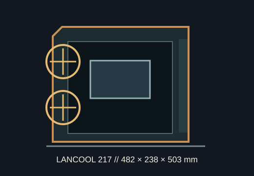

[ MODEL IDENTIFICATION // LIAN LI LANCOOL 217 ]
Lian Li LANCOOL 217
A 482 × 238 × 503 mm airflow-focused mid-tower with dual 170 mm front fans, support for large workstation boards and up to 380 mm graphics cards.

ROTATION NOTE: The LANCOOL 217 supports standard and rotated PSU orientations; PSU length and GPU airflow clearances differ by configuration. Data below identifies both where applicable.
Dimensions & fit specifications
| External dimensions | 482 × 238 × 503 mm (D × W × H); steel, tempered glass and wood accents vary by color/SKU. |
|---|---|
| Motherboards | SSI-EEB under 330 mm wide, E-ATX under 280 mm wide, ATX, microATX and Mini-ITX. Back-connect support is ATX/microATX. |
| GPU / CPU cooler / PSU | Maximum GPU length 380 mm; CPU cooler height 180 mm. ATX PSU under 220 mm in standard orientation or under 180 mm when rotated. |
| Radiator | Top radiator support up to 360/280/240 mm; top bracket is removable. Front is configured for 2 × 170 mm fans (or 3 × 140/120 mm with the included bracket); the maker specifies a top radiator position. |
| Drive mounts | Two modular drive cages, each supporting one 3.5-inch HDD plus a 2.5-inch SSD or alternative 3.5/2.5-inch combinations; additional SSD mounts are behind the motherboard and on the PSU shroud. |
| Fans | Front 2 × 170 mm preinstalled; top 3 × 120 or 2 × 140 mm; PSU shroud above 3 × 120 mm (two included); rear 140 mm included. Bottom chamber supports 2 × 120 mm. |
Compatibility & preservation
The unusually large front fans and adjustable airflow modes are central to this case's thermal design. The 380 mm GPU envelope is measured in the standard layout; check the installed drive cage, orientation and power lead bend. For E-ATX/SSI-EEB boards, follow the exact standoff and side-bracket instructions.
- Preserve the front-fan bracket, wooden front accents, anti-sag support, drive cage and removable top radiator bracket.
- Confirm PSU orientation and length before ordering modular cables or a lower-chamber radiator/fan combination.
- Use the linked manual when installing a back-connect motherboard; support is limited to ATX and microATX.
Manufacturer sources
- Lian Li — LANCOOL 217 product specificationsManufacturer dimensions, board compatibility, GPU/cooler limits, radiator support and drive chart.
- Lian Li — LANCOOL 217 manual (PDF hosted by Google Drive)Official installation manual linked from the LANCOOL 217 product page.